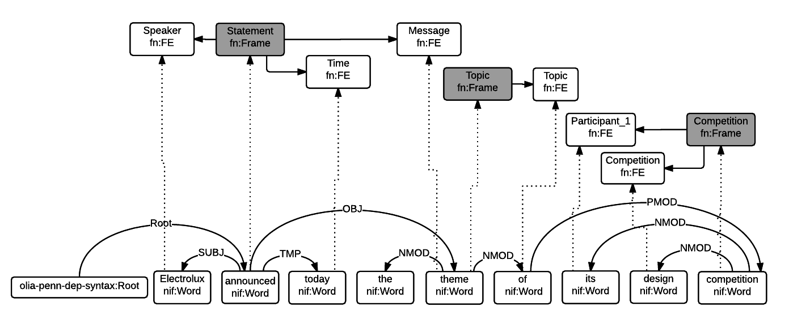

Integrating FrameNet in NIF
Table of Contents
1 Introduction
FrameNet (FN) [6] is a large-scale linguistic resource developed at Berkeley.
It describes word senses and the situations they can play in ("valences") in terms of
frames, frame elements and the links between them.
Frames represent real-world situations (eg frame:Statement means to make a statement),
the lexical units (LU) that invoke them (eg lu:announce.v, lu:declare.v),
and the frame elements FE, i.e. things and entities that play a role in them (eg fe:Speaker.statement, fe:Message.statement, fe:Time.statement).
FN has been converted to Linked Open Data (LOD) by ISTC-CNR [4], together with a large corpus of text annotated with FN.
The Manually Annotated Sub-Corpus (MASC) [5] also includes FN and [3] describes plans to interlink it with LOD. However, the MASC download page does not include LOD (RDF) formats.
The MultiSensor project (MS) applies semantic technologies to analysis of media including news articles. MS has standardized on using the NLP Interchange Format (NIF) for data exchange, in order to faciliate interoperation and extensibility.
NIF [2] is an RDF based format for exchanging Linguistic Linked Data (NLP and related). It involves a number of ontologies, including NIF for binding to text and packaging, ITS for Named Entity Recognition (NER), OLIA for NLP information, MARL for sentiment/opinion, etc.
This paper reviews the FN-LOD representation and describes a possible way to integrate FN in NIF, proposed to be used in MultiSensor.
1.1 Sample Sentence
In this paper we'll consider the sample sentence "Electrolux announced today the theme for its design competition".
3 softwares are available for automatic FN annotation: Shalmaneser, LTH and SEMAFOR.
We'll use SEMAFOR to perform automatic FN annotation of the sentence.
SEMAFOR uses a dependency parse (shown on top) to generate candidate frames for the sentence (shown on the bottom).
Here we have highlighted the Statement frame, invoked by lu:announce.v and having FEs Speaker, Time and Message.
The other candidate frames are dimmed out.
It may be easier to see the candidate frames in SEMAFOR's vertical layout. Here each column represents a frame:

SEMAFOR also offers a JSON format (./SEMAFOR.json) where one can see the candidate frames and their targets (LUs) and FEs.
| frame | score |
|---|---|
| Statement | 113.2 |
| Calendric_unit | 30.4 |
| Topic | 25.4 |
| Coming_up_with | 50.7 |
| Competition | 54.6 |
1.2 SEMAFOR Candidate Frame Filtering
SEMAFOR includes a score for each frame, which can help us pick the best frames.
In this case the two top-scoring candidates (Statement and Competition) are the best frames.
Calendric_unit is too small (equal to lu:Time.statement), Coming_up_with is wrong, and Topic is also part of the bigger frame.
We propose a simple approach to filter candidate frames based on score and the dependency tree structure (see diagram in sec. 4.3):
- Order candidate frames by decreasing score
- Repeat:
- Add the highest scoring frame f
- Discard any frames that are governed by f in the dependency tree
1.3 FrameNet
Frames are developed from real-world linguistic attestations.
Eg the annotations of lu:announce.v include about 80 sentences of varying phrase forms.
Colors show the different FE's.

Frames are extensively documented. Eg the documentation for Statement includes:
- Definitions for each FE (classified as Core, Non-Core and Extra-Thematic)
- "Coreness sets", i.e. which FE alternatives are required to realize the frame.
In this case there are two core sets:
{Message, Topic}and{Medium, Speaker}. This means that eitherMessageorTopicis required; and eitherMediumorSpeakeris required. - Frame relations, which include inheritance, using, subframe, causative/inchoative, etc. These are similar to Use Case relations but richer.
Frame relations can be visualized with FrameGrapher:
Eg this figure for Statement shows that:
- The frame
Statementis inherited by:Complaining, Predicting, Reading_aloud, Recording, Reveal_secret, Telling(red arrows) Statementuses:Communication(green arrows)Statementis used by:Adducing, Attributed_information, Chatting, Judgment_communication, Renunciation, Unattributed_information(green arrows)- The FE relations between
StatementandTellingare also shown, together with their Core (c) or Non-Core (nc) status. Egfe:Addressee.statementis Non-Core (you can make a statement without addressing anyone in particular), butfe:Addressee.tellingis Core because you have to tell someone.
2 FN Ontologies
The OWL ontology representation of FN is described in the paper [4], but a lot of technical details are missing, so one has to read the FN Book [6] to understand the ontologies.
- There is a partial ontology diagram in the paper, but it doesn't show all classes and relations
- Some elements are commented extensively using texts from the FN Book, but we found these texts more understandable when reading them in the book, since the comments don't capture the context.
- Many elements are not documented, eg class
fn:Header, data propertyfn:frame_cBy(xsd:string), etc. One can only surmise that it's the ID of the person who created the frame.
In this section we describe the available FN ontologies and RDF data files, provide diagrams to facilitate understanding, and derived files that are easier to consume.
2.1 Prefixes
FN uses the following prefixes. We have started registering them in http://prefix.cc (one can submit only one prefix per day). All prefixes used by MS are available in ./prefixes.ttl.
| prefix | URL | description |
|---|---|---|
| fn: | http://www.ontologydesignpatterns.org/ont/framenet/tbox/ | FN metamodel (tbox) |
| frame: | http://www.ontologydesignpatterns.org/ont/framenet/abox/frame/ | frame |
| fe: | http://www.ontologydesignpatterns.org/ont/framenet/abox/fe/ | frame element |
| lu: | http://www.ontologydesignpatterns.org/ont/framenet/abox/lu/ | lexical unit |
| st: | http://www.ontologydesignpatterns.org/ont/framenet/abox/semType/ | semantic type |
2.2 fntbox ontology
Th FN "terminology box" fntbox is the FN metamodel. It's an OWL ontology that uses Restrictions extensively, and is easiest to understand in Manchester notation: ./fntbox.omn. It has 16 Classes, 67 ObjectProperties, 49 DataProperties. Online documentation (made with OWLDoc) is available.
Most relations have inverses, which actually hinders the understanding of the "hierarchy" of data.
We made a diagram showing all classes (source file ./fntbox.puml), their relations (object properties) and fields (data properties).
For some properties we figured out the range from Restrictions; properties having a Union as domain are shown several times on the diagram.

Some notes about the most important classes (mostly coming from the FN Book). We navigate top-down and split the classes in two groups. First are classes that represent texts and their annotation with frame instances and other linguistic info:
Headerholds together allFullTextAnnotationandCorpDocabout the same frameFullTextAnnotationrepresents a mode of annotation where sentences are "preselected" by a given textCorpDocis a corpus comprising of documents and sentences that are carefully chosen by lexicographers to illustrate the possible valences of LUs, i.e. make various frames for each sense of each LUSentenceholds thetextbeing annotated and some identifying informationAnnotationSetis a set of annotations about one frame. One sentence may have several frames and they may even overlapLayeris a subset of annotations with a single purpose, indicated infn:layer_name. Often used ones:- Target: LU that is target of the frame. Such layer has a single label
- FE: frame elements
- PENN: part of speech (eg VBD, VVN, dt, nn)
- PT: phrase type (eg NP, AJP, PP, PPing)
- GF: grammatical function (eg Ext, Obj, Dep, Comp)
- NER: named entity recognition (eg person, location)
Labelis a word or phrase in an annotatedSentence(indicated by indexlabel_start, label_end) that:- Plays the role of LU instance. This is indicated by
fn:label_namebeing "Target", and it's the singleLabelin a layer having the samefn:layer_name - Or plays the role of FE instance. In this case
fn:label_FEpoints to the FE definition (egfe:Speaker.statement) andfn:label_namecorresponds (eg "Speaker") - Or carries a grammatical or POS tag in
label_name - Or indicates a lexically omitted FE (see [6] sec 3.2.3 Null instantiation) using
fn:label_itype(eg "CNI", "DNI", etc), in which caselabel_start, label_endare omitted
- Plays the role of LU instance. This is indicated by
Then are frame definition classes:
Frameis a structure that abstracts over real-world situations, obtained through linguistic attestationLexUnitis the head-word of a sentence or sub-sentence that invokes the frame. An important goal of the FN project is to capture the meaning of words through annotated examples, that's why the LU can point to anAnnotationSetthat supports it. It can also carry simple statistics (SentenceCount) used for managing the work of annotatorsLexemeis the linguistic representation of a LU. One LU can have several lexemesFrameElementare entities (things, actors, times, messages, etc) that participate in a frame. They are classified withFE_coreTypeinto Core, Core-Unexpressed, Extra-Thematic, PeripheralFECoreSetdescribes a set of alternative FEs, one of which must be present in the frame. A frame can have several core setsSemTypeclassifies frames, FEs and LUs by type. Eg some sem types are:- for Frame: Non-perspectivalized_frame, Non-Lexical_Frame
- for FE: Sentient (an agent), Artifact, Message, State_of_affairs
2.3 framenet ontology
framenet is an alternative version of fntbox. It is significantly more complex: 33 Classes, 71 ObjectProperties, 23 DataProperties, and 18 Individuals. We converted it to Manchester notation (./framenet.omn).
We also made a diagram (source file ./framenet-nolabel.puml), which elides the edge labels to avoid clutter:
The diagram with edge labels is also available but is nearly unreadable: ./img/framenet.png (source file ./img/framenet.puml)
{kind=link}
This ontology perhaps corresponds better to the FN Book. But since it is not used in the two files described below, we do not give it further consideration.
2.4 fnabox ontology
The FN "assertion box" fnabox is an RDF representation of all frame definitions.
It includes only individuals, not classes nor property definitions.
It used some illegal URI chars (spaces and parentheses) that we converted to underscores (eg lu:swing__into_.v instead of lu:swing_(into).v).
Then we converted it to readable turtle where all individuals are sorted by name and all statements about an individual are together.
Eg the statements about frame:Statement are:
frame:Statement
fn:hasFrameElement fe:Time.statement, fe:Iteration.statement, fe:Medium.statement, fe:Manner.statement, fe:Event_description.statement,
fe:Means.statement, fe:Message.statement, fe:Speaker.statement, fe:Topic.statement, fe:Epistemic_stance.statement, fe:Place.statement,
fe:Degree.statement, fe:Addressee.statement, fe:Depictive.statement, fe:Internal_cause.statement, fe:Containing_event.statement,
fe:Group.statement, fe:Occasion.statement, fe:Particular_iteration.statement, fe:Frequency.statement ;
fn:hasLexUnit lu:gloat.v, lu:explain.v, lu:declaration.n, lu:talk.v, lu:admission.n, lu:state.v, lu:recount.v, lu:exclamation.n,
lu:contention.n, lu:statement.n, lu:proposition.n, lu:preach.v, lu:pronouncement.n, lu:announce.v, lu:declare.v, lu:explanation.n,
lu:speak.v, lu:propose.v, lu:proclamation.n, lu:allegation.n, lu:exclaim.v, lu:conjecture.v, lu:comment.v, lu:caution.v, lu:concede.v,
lu:confirm.v, lu:add.v, lu:proclaim.v, lu:insist.v, lu:address.v, lu:report.n, lu:attest.v, lu:aver.v, lu:announcement.n, lu:avow.v,
lu:contend.v, lu:assert.v, lu:claim.n, lu:maintain.v, lu:denial.n, lu:conjecture.n, lu:insistence.n, lu:remark.n, lu:relate.v,
lu:mention.n, lu:claim.v, lu:report.v, lu:hazard.v, lu:affirm.v, lu:assertion.n, lu:allege.v, lu:smirk.v, lu:pout.v, lu:remark.v,
lu:profess.v, lu:admit.v, lu:deny.v, lu:mention.v, lu:affirmation.n, lu:concession.n, lu:reaffirm.v, lu:write.v, lu:venture.v, lu:say.v,
lu:suggest.v, lu:reiterate.v, lu:proposal.n, lu:comment.n ;
fn:isInheritedBy frame:Telling, frame:Reveal_secret, frame:Recording, frame:Complaining ;
fn:isUsedBy frame:Unattributed_information, frame:Adducing, frame:Judgment_communication, frame:Attributed_information, frame:Renunciation,
frame:Chatting ;
fn:uses frame:Communication .
Statements about a couple of the core FEs in that frame:
fe:Speaker.statement a fn:FrameElement ; fn:hasSemType st:Sentient ; fn:hasSuperFE fe:Speaker.speak_on_topic , fe:Speaker.encoding , fe:Communicator.communication , fe:Cognizer.categorization , fe:Agent.body_movement . fe:Message.statement a fn:FrameElement ; fn:hasSemType st:Message ; fn:hasSuperFE fe:Message.encoding , fe:Message.communication , fe:Message.body_movement , fe:Item.categorization , fe:Category.categorization .
2.5 fndata
fndata_v5 is a corpus or FN annotations provided in RDF by ISTC-CNR.
It's 540Mb RDF or 292Mb Turtle or 1.03Gb NTriples, and comprises 3.8M triples.
It includes 5946 sentences and 20361 frame instances (annotationSetFrame), i.e. 3.4 frames per sentence.
The info about each sentence takes 640 triples on average; about a quarter of these are pure frame instance info (45 triples per frame).
We extracted all triples about iran_missile_fullTextAnnotation_sentence_52 into file ./iran_missile_sentence_52.ttl.
This is sentence 3 of paragraph 10 of a fullTextAnnotation corpus named "iran_missile" and says:
This project was focused on the development of a longer ranged ( 150 - 200 km ) and more heavily armed version of the Israeli Gabriel anti - ship missile ( not as sometimes reported with the development of a ballistic missile based upon Israeli Jericho surface - to - surface missile technology ) .
Extracting the triples was easy to do since the URLs of nodes in these triples share the same base:
http://www.ontologydesignpatterns.org/ont/framenet/abox/nti__iran_missile_fullTextAnnotation_sentence_52_.
This file played a crucial role in allowing understanding the structure of FN RDF data and the meaning of most fields (see the fntbox diagram and field descriptions above).
- This subset includes 6 manually annotated frames: Gizmo, Bearing_arms, Cause_to_make_progress, Cause_to_make_progress, Project, Type
- SEMAFOR reports these frames (except Gizmo), and a number of smaller frames (often consisting of a single word): Artifact Cardinal_numbers Degree Duration_attribute Frequency Increment Part_inner_outer Part_inner_outer Place_weight_on Range Statement Vehicle Weapon Weapon Weapon
"Gizmo" is invoked by this phrase: "surface - to - surface missile technology". It is not recognized by SEMAFOR probably because it may have an older set of frame definitions.
3 Comparing FN to NIF
Since our goal is to integrate FN to NIF, we'll start with a comparison between the two. We presuppose the reader knows NIF. See [2] for a description of NIF, and [1] for a brief overview of NIF and related ontologies. An extensive bibliography is available on Zotero.
The basic NIF class and property diagram is below. Compare it to sec 2.2

3.1 Text Framing
Document is the basic level at which there is correspondence between FN and NIF: fn:Document and nif:Context.
The text is stored in fn:text, respectively nif:isString.
Higher than document, FN has fn:CorpDoc or fn:FullTextAnnotation (two kinds of corpora).
NIF uses nif:Context for this as well, using nif:broaderContext to point to higher-level contexts. However, we am not aware of NIF data actually using this property.
Below document, fn:Sentence is the basic FN level to which frames are attached. Then follow fn:AnnotationSet, fn:Layer, fn:Label. Char offsets are attached to fn:Label: fn:label_start, fn:label_end.
NIF uses a generic class nif:Structure with subclasses Paragraph, Sentence, Phrase, Word, etc. Char offsets are specified at each level (nif:beginIndex, nif:endIndex). One can also provide the text at this level (nif:anchorOf), though this is redundant because referenceContext/isString is mandatory and contains the full text.
3.2 Text Links
Every NIF string (Paragraph, Sentence, Phrase, Word etc) must point to the enclosing context (nif:referenceContext).
NIF has property nif:subString (and inverse nif:superString) that can be used to point uniformly from higher level texts to lower level texts
(eg from Paragraph to Sentence to Phrase to Word). However it is not often used.
There is also a specialized property nif:word (inverse nif:sentence) that points from a sentence down to its words; but it is not declared as specialization of nif:subString.
One can also make chains of sentences (nif:previousSentence, nif:nextSentence) and words (nif:previousWord, nif:nextWord), and point to the first/last word of a sentence.
In contrast, FN has non-uniform treatment of links: to navigate from Sentence to its strings (Label), one has to follow the property path sentenceInDocument/annoForSentence/hasLayer/hasLabel.
3.3 Text Nodes
FN doesn't recommend any convention for the URLs of text nodes, but you can see a pattern in sec 2.5.
Eg iran_missile_fullTextAnnotation_sentence_52_annotationSet_6_layer_2_label_0 is the URL of label 0 in layer 2 in set 6 of sentence_52
(which is actually sentence 3 of paragraph 10 of the fullTextAnnotation corpus.
Note: labels, layers and sets use only even numbers in this representation).
This label represents the phrase surface - to - surface missile (from offset 282 to 253) representing fe:Use.gizmo of frame:Gizmo.
This convention makes labels relative to annotation sets (frame instances), and indeed this is borne out by the fntbox class diagram (sec 2.2).
In contrast, NIF strongly recommends to adopt a URL scheme that is based on character offsets and is thus global within the document (nif:Context).
The class nif:RFC5147String provides such a scheme. The above phrase would be addressed like this (<#char=0,2353> represents the complete text).
<#char=282,253> a nif:Phrase; nif:referenceContext <#char=0,2353>.
The reason is to ensure interoperability between different NLP tools that all output NIF format over the same text. Using a uniform node addressing scheme ensures that the triples produced by the different tools will "mesh" together.
This is perhaps the most significant difference between FN and NIF:
- FN defines Labels "as needed" by linguistic annotation, and locally. Several Label nodes can point to the same piece of text (offsets in the document). Labels are not shared between different annotations (NLP features).
- NIF typically defines Strings for every word and sentence of the document, globally.
Each piece of text is represented by one node (but of course, Words overlap their containing Phrases and Phrases overlap their containing Sentences).
Several NLP features can be attached to this node:
nif:oliaLinkfor syntactic individualnif:oliaCategoryfor syntactic classits:taIdentReffor Named Entity individualits:taClassReffor Named Entity class (typically NERD is used for this purpose, eg nerd:Organization); etc
One could use the "NIF Stanbol" profile to associate several annotations with the same String. But:
- This complicates the representation
- It uses completely different properties, eg
fise:entity-referenceinstead ofits:taIdentRefandfise:entity-typeinstead ofits:taClassRef(we have raised an issue against the NIF ontology about this) - The MS project has standardized on using the NIF Simple profile
So it is preferable to continue to use the NIF Simple profile, and associate several annotations with a single word/phrase by using several nif:oliaLink properties.
4 Integrating FN in NIF
As we have seen in the previous section, the FN and NIF models for representing annotated text are totally different.
Therefore we propose to represent the minimum possible FN nodes, and point to them from nif:String using nif:oliaLink.
We propose a representation that integrates FN in NIF, relying on a dependency parse of the sentence.
Let head be a head-word that governs word1..N (and by extension, the phrases governed by these words).
Assume head corresponds to lexUnit that invokes frame,
and the frame has elements frameElement1..N, corresponding to word1..N.
Just for illustration, assume the frame also has a lexically omitted FE frameElementN+1 of type "CNI".

The easiest way to understand the representation is to think of fn:AnnotationSet as frame instance and think of fn:Label as FE instance.
The representation consists of 3 parts:
- NIF includes NIF word offset info, as well as the dependency tree from head to word1..N (not shown).
nif:dependencyor specific dependency parsing properties are used for that tree. Eg in MS, UPF generatesupf-deep:deepDependency(TODO ref) - Frame definition is defined in the fnabox ontology (sec 2.4)
- Frame instance connects
nif:Wordsto frames.
Notes:
- We don't use
fe:label_startandfe:label_endbecause those would duplicatenif:beginIndexandnif:endIndexunnecessarily - The same word could participate in several frames (as LU or FE), in which case it will have several
nif:oliaLink - The lexically omitted FE (of type "CNI") has no corresponding NIF node. Nevertheless, it is a full participant in the frame
- word1..N are of course connected to phrase.
- The nodes labelLU and layerLU are redundant and carry no information (except the fixed string "Target"), so they could be omitted. We have included them to be faithful to the fntbox ontology (sec 2.2).
4.1 A note on inverses
As shown in sec 2.2, fntbox has an inverse for each property. However, the designers of the PROV ontology have concluded that inverses actually harm interoperability by exerting a higher cost to achieve it:
When all inverses are defined for all properties, modelers may choose from two logically equivalent properties when making each assertion. Although the two options may be logically equivalent, developers consuming the assertions may need to exert extra effort to handle both (e.g., by either adding an OWL reasoner or writing code and queries to handle both cases). This extra effort can be reduced by preferring one inverse over another.
We agree with them and therefore recommend to use exactly the FN properties shown above, and not their inverses.
4.2 Querying FN NIF
FN in NIF represents a fairly complex graph structure.
In this section we show a few queries to extract data from that graph.
We use SPARQL property paths (including inverses ^) liberally and indicate the input parameter of a query with $.
We don't bother to check the types of intermediate nodes, relying that the specific FN properties will occur only on appropriate nodes.
Find all frames of a document (nif:Context) together with the corresponding fn:AnnotationSet
select * {
$context ^nif:referenceContext/nif:oliaLink ?annoSet.
?annoSet fn:annotationSetFrame ?frame}
Find the LU corresponding to a head-word (if indeed it is the head-word of a frame-annotated phrase)
select * {
$head nif:oliaLink/fn:annotationSetLU ?lu}
We could also use the round-about path
select * {
$head nif:oliaLink [fn:label_name "Target"; ^fn:hasLabel/^fn:hasLayer/fn:annotationSetLU ?lu]}
Find all frames of a sentence together with the corresponding fn:AnnotationSet.
Usually nif:word is used to point out the words of a sentence (that is the practice in MS).
select * {
$sentence nif:word/nif:oliaLink ?annoSet.
?annoSet fn:annotationSetFrame ?frame}
Find all frames of the complete text (nif:Context) together with the corresponding fn:AnnotationSet.
NIF mandates that nif:referenceContext is used to connect each word to the complete text.
select * {
$context ^nif:referenceContext/nif:oliaLink ?annoSet.
?annoSet fn:annotationSetFrame ?frame}
4.3 Representing the Sample Sentence in FN NIF
In this section we represent the sample sentence from sec 1.1 as NIF, adding FN annotations.
The candidate filtering described in that section will leave only the top frame Statement,
but for the sake of illustration we represent 3 of the 5 candidate frames (Statement, Topic, Competition):

- The top layer shows Frame definitions (fntbox)
- The bottom layer shows NIF words and dependency links between them
- The dotted arrows represent frame instances, connecting words to frames.
For simplicity, we don't show the
Label, Layer, AnnotationSetnodes (see previous section)
./fn-nif-example.ttl represents all SEMAFOR candidate frames. Compared to sec 4, we don't represent the redundant nodes labelLU and layerLU.
5 Acknowledgements
This work is part of the MultiSensor project that has received funding from the European Union under grant agreement FP7 610411.
Object diagrams are made with PlantUML.
6 References
- Alexiev V. Linguistic Linked Data presentation, Multisensor Project Meeting, Bonn, Germany, October 2014.
- Hellmann S., Lehmann J., Auer S., and Brümmer M. Integrating NLP using Linked Data. In International Semantic Web Conference (ISWC) 2013.
- Ide N., FrameNet and Linked Data. In Frame Semantics in NLP: A Workshop in Honor of Chuck Fillmore (1929–2014), pages 18–21. Baltimore, Maryland USA, 27 June 2014.
- Nuzzolese A.G., Gangemi A., and Presutti V. Gathering lexical linked data and knowledge patterns from FrameNet. In Knowledge Capture (K-CAP'11), pages 41–48. June 26-29, 2011, Banff, Alberta, Canada
- Passonneau R., Baker C., Fellbaum C., and Ide N. The MASC Word Sense Sentence Corpus. In Language Resources and Evaluation Conference (LREC-12), Istanbul, Turkey.
- Ruppenhofer J., Ellsworth M., Petruck M.R.L, Johnson C.R., Scheffczyk J. FrameNet II: Extended Theory and Practice, Sep 2010